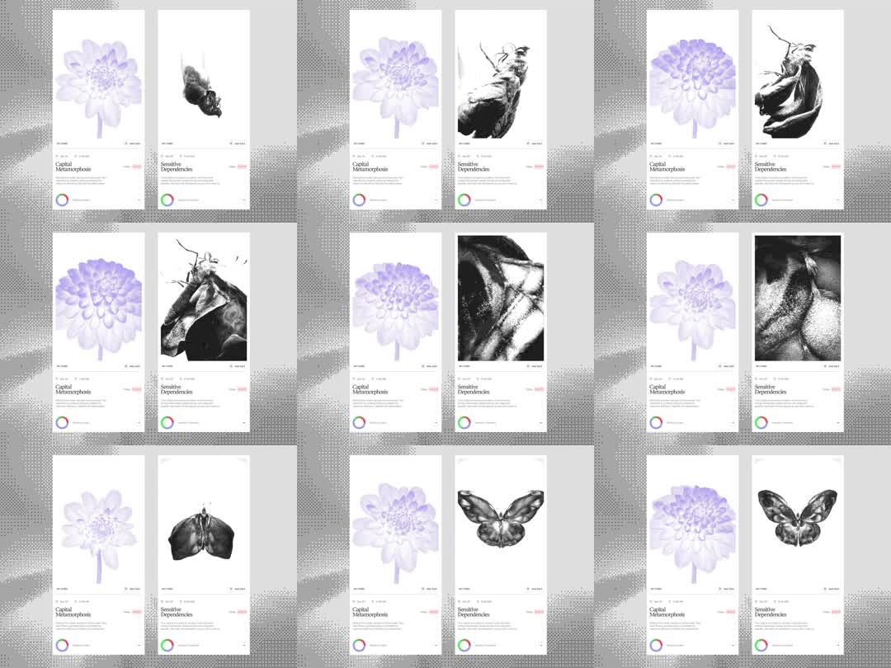

Media
Frame-by-frame

0-12%
Two tall white cards on a grey dithered backdrop; left card static purple-tinted dithered flower, right card shows a dithered bee; captions + pink tags below images; bottom row has a rainbow conic ring and a track bar.
12-30%
Right image crossfades/morphs to a curled creature pose; dither pattern stays crisp at all times (no blur).
30-55%
Right image morphs again into an abstract dark crumpled form (chrysalis); left flower cycles its own subtle bloom variants.
55-80%
Right image resolves into a fully-formed butterfly; progress bar has advanced steadily; ring hue rotates.
80-100%
Sequence resets: butterfly fades back to the bee; bar returns to zero; loop.